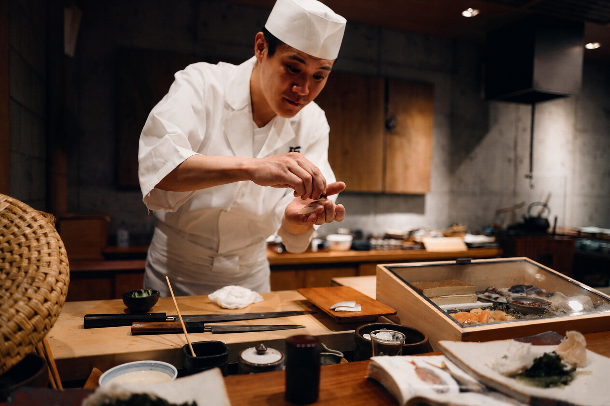

Your japanese experience starts here
Experience the perfect harmony between tradition and flavor at Kaizen Sushi Bar. From fresh, handcrafted sushi to authentic Japanese specialties, each dish is prepared to transform simple moments into unforgettable experiences.
What our guests say
Real experiences from people who love our food

Hiroshi Tanaka
15 years crafting authentic Japanese flavors with passion and precision.
Emily Moore
2 days agoChef Hiroshi's omakase was a transcendent experience. Every piece was a work of art — the balance of flavors was unlike anything I've tasted before. Kaizen has set a new standard for Japanese cuisine in this city.
James Rivera
1 week agoI came in skeptical but left completely converted. The Hot Roll alone is worth the trip. You can tell Chef Hiroshi puts real soul into every dish — the freshness and technique are on another level entirely.